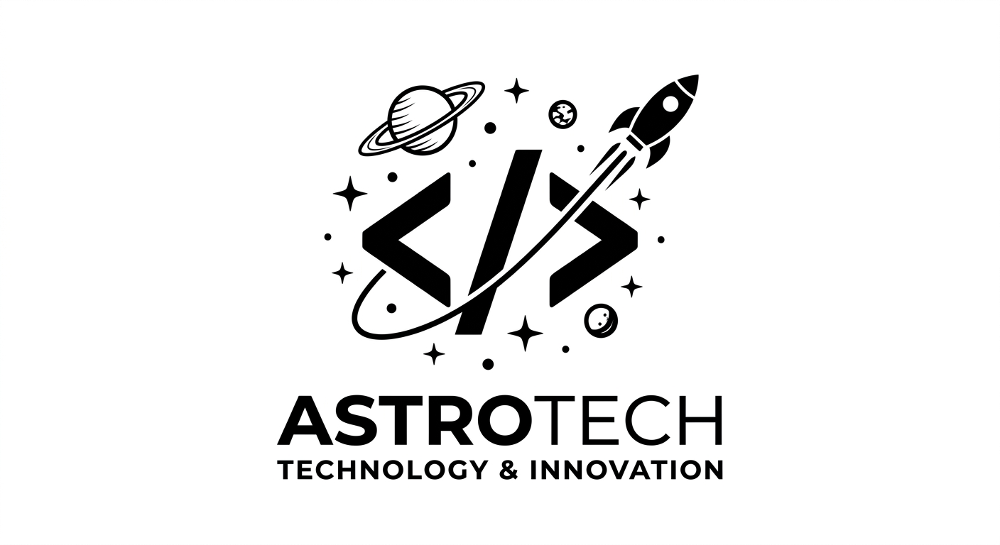

Desenvolvido para a Comunidade Tech com foco em organização de eventos e controle de participantes.
Ver no GitHubPágina moderna focada em design limpo, responsividade e apresentação profissional.
Ver OnlineAplicação interativa para gestão de tarefas com interface moderna e funcionalidades dinâmicas.
Ver Online